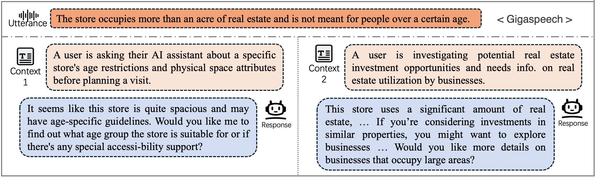
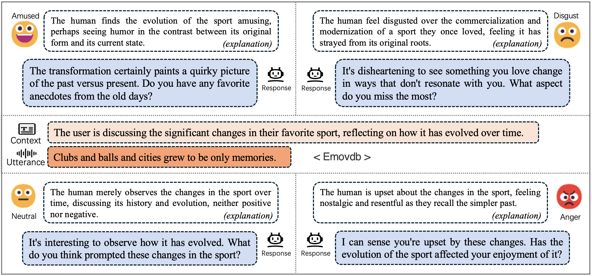

赛道 1 - EmpathyEval
语境化情感语音评测
本赛道评测全模态模型是否能够结合语境理解、情感推断与副语言线索，从候选语音回复中识别最合适的回答， 以推动模型在语音场景中的共情感知能力。
任务描述
给定文本语境、一段话语音频以及一组选项式候选回复音频，系统需要选出最具共情性的回复。
评测将参赛系统的预测结果与人工标注进行对比，因此该基准强调与人类判断一致的回复选择。
子任务
任务 1：Context-Variant
周围对话语境发生变化，代表不同的情境。模型需要判断哪条候选回复最适合特定的情境。

数据示例（音频与文本语境）
|
语境 1
在一次单身派对周末中，朋友们给 Ta 准备了一份包含美甲服务的水疗惊喜，而 Ta 以前从未去过美甲店。 |
语境 2
在幻想橄榄球赌约失败后，约定的惩罚是去做一套亮闪闪的夸张美甲，并保持一周。 |
|
话语音频
|
|
|
候选回复
A
B
✓
|
候选回复
A
B
✓
|
任务 2：Tone-Variant
模型需要依赖话语中的声学和副语言线索来推断说话者的内在状态或情绪，并判断哪条回复在情感上最适合当前话语。

数据示例（音频与文本语境）
|
语境
在妈妈膝盖手术前帮她整理客房时，我翻出一个落满灰尘、写着 “1996-2002” 的盒子，里面装满了夏令营拍立得和生日派对照片。几天后的一个晚上，我把这叠照片带回家继续整理。 |
|
|
话语音频：语气 1
|
话语音频：语气 2
|
|
候选回复
A
✓
B
|
候选回复
A
✓
B
|
评测指标
- Accuracy：每正确预测一个样本，准确率得分加 1。
- Grouped bonus：若同一组 context-variant 或 tone-variant 样本均预测正确，则 bonus 得分加 1。
- Final Score：
(Accuracy + Bonus) / (#data + #group)。
排行榜
排行榜将分别展示 context-variant 与 tone-variant 的结果, Accuracy / Bonus / Final Score, 以及最终得分的加权平均值。
| 排名 | 模型 | Context-Variant | Tone-Variant | 平均值 |
|---|---|---|---|---|
| 1 | 111 | 339 / 116 / 0.784 | 113 / 23 / 0.907 | 452 / 139 / 0.810 |
| 2 | 19191 | 313 / 100 / 0.712 | 109 / 19 / 0.853 | 422 / 119 / 0.741 |
| 3 | WhereIsAI-Lingnan | 289 / 84 / 0.643 | 108 / 19 / 0.847 | 397 / 103 / 0.685 |
| 3 | Lenormand_Team | 278 / 100 / 0.652 | 106 / 16 / 0.813 | 384 / 116 / 0.685 |
| 5 | HumOmni_Nexus | 291 / 85 / 0.648 | 91 / 6 / 0.647 | 382 / 91 / 0.648 |
| 6 | smalltry | 235 / 55 / 0.500 | 76 / 5 / 0.540 | 311 / 60 / 0.508 |
| (基线模型) | Qwen2.5-Omni-7B | 189 / 32 / 0.381 | 60 / 3 / 0.420 | 249 / 35 / 0.389 |
| (基线模型) | Qwen2.5-Omni-3B | 182 / 31 / 0.367 | 66 / 3 / 0.460 | 248 / 34 / 0.386 |
公开成绩在评测流程结束后公布。当前成绩截至 2026 年 6 月 15 日 20:00 GMT+8 的提交结果。